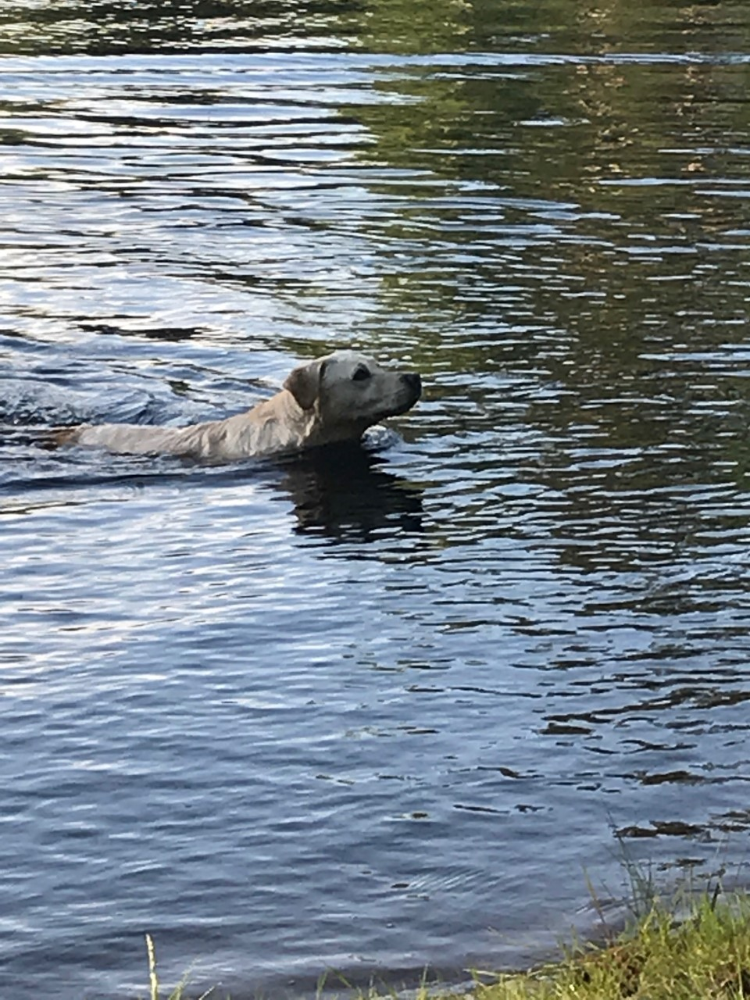
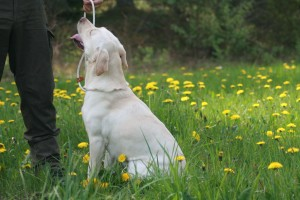
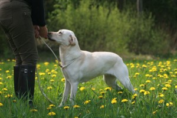

Provresultat: Tar snabbt an spåret i ett mycket behagligt tempo. Arbetar metodiskt med tydliga markeringar. Har några ej noterbara tappter som hon dock reder ut självständigt. Ringar i vinklarna och ringar stort vid spårslutet. Mycket skottfast. Spårtid: 17 minuter.
Öppen klass: 1/hp-utmärkelse.

2018

Viltspårprov, 18:e maj 2014.

Provresultat: Finner snabbt spårstarten och markerar tydligt. Arbetar sedan i ett mycket lämpligt tempo. Och följer spåret utan avvikelser. Klarar vinkel 1 och 2 utmärkt. Vinkel 3, återgångsvinkel, hunden spårar till återgången, vänder och markerar vinkeln tydligt. Klarar vinkel 4 och bloduppehåll utmärkt. Följer sedan spåret ända fram till skottplatsen. Mycket stabil i skottet och är sedan ivrig på att fortsätta. Markerar viltdelen tydligt. En mycket lovande labrador tik med stor motivation för spårarbete.